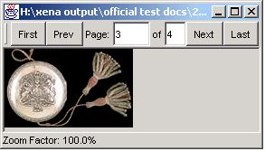

Normalise Directory of Records Using Multipage
The directory normaliser of the Multipage plugin is used to normalise selected files within a single directory as a single Xena package. It is normally used to take a directory of image documents to create a single multi-page Xena file. It can also be used after exporting all the pages in a PDF document as images into a directory. Xena then normalises the directory into a single Xena package.
When normalising using the multipage plugin, all of the files to be included in the multipage Xena package must be of a data format that Xena can normalise. If any of the files selected for inclusion in the Xena package cannot be normalised by Xena, the normalisation will fail.
To normalise records using the multipage plugin
- Open Xena.
- From the File menu, select Normalise File.
- Using the Open window, navigate to and open the directory containing the files you wish to include in the multipage Xena package.
- Select the files that you wish to include in the multipage Xena package.
To select multiple files hold down the control key and click on each file in turn.
To select a range of files, select the first file in the range and then, holding down the shift key, select the last file in the range.
- Click on Open.
- The Order Files window will open.
It lists all of the files you have selected.
Use the Up and Down buttons to arrange the contained files in the order you desire
- Click OK.
- The Choose File Type window will open.
- Select MultiPage from the drop down list and click. OK
- The multipage Xena package will now be displayed.

The normalised Xena-Multipage package has now been created.
See Also
Batch Normaliser